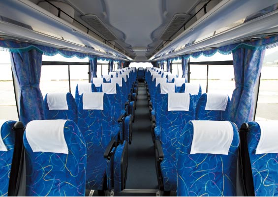

Timetable/Availability
Kochi Station ⇔ Takamatsu Airport
Kotobus tickets will be released 03 months in advance
◆ Ticket price:one way 2,800yen
Discount
Seat Lineup
-
- 
Standard
At a reasonable price!
Timetable
From October 27th, 2019 to March 28th, 2020
Please click on the name of a boarding/arrival location for a visual map
Kochi Station
| 高知駅 | 高松空港着 | Hong Kong Express | |
|---|---|---|---|
| Monday | 13：10発 | 15：10着 | 高松 17：10発 → 香港 20：05着 |
| Tuesday | － | － | － |
| Wednesday | 13：20発 | 15：20着 | 高松 17：20発 → 香港 20：15着 |
| Thursday | － | － | － |
| Friday | 13：20発 | 15：20着 | 高松 17：20発 → 香港 20：15着 |
| Saturday | － | － | － |
| Sunday | 11：30発 | 13：30着 | 高松 15：30発 → 香港 18：25着 |
From Takamatsu Airport
| From Takamatsu Airport | 高知駅着 | Hong Kong Express | |
|---|---|---|---|
| Monday | 17：15発 | 19：15着 | 香港 11：30 発 → 高松 16：15着 |
| Tuesday | － | － | － |
| Wednesday | 17：15発 | 19：15着 | 香港 11：30 発 → 高松 16：15着 |
| Thursday | － | － | － |
| Friday | 15：45発 | 17：45着 | 香港 10：00 発 → 高松 14：45着 |
| Saturday | － | － | － |
| Sunday | 15：45発 | 17：45着 | 香港 10：00 発 → 高松 14：45着 |
2019年冬期運航スケジュール 2019.10.27(日)～2020.3.28(土)
各乗車場所をクリックすると集合地図を表示します。
高知駅
| 高知駅 | 高松空港着 | Hong Kong Express | |
|---|---|---|---|
| Monday | 10：40発 | 12：40着 | 高松 14：55発 → 香港 18：20着 |
| Tuesday | － | － | － |
| Wednesday | 11：05発 | 13：05着 | 高松 15：30発 → 香港 18：55着 |
| Thursday | 12：25発 | 14：25着 | 高松 16：25発 → 香港 19：55着 |
| Friday | 10：30発 | 12：30着 | 高松 14：30発 → 香港 17：55着 |
| Saturday | － | － | － |
| Sunday | 11：05発 | 13：05着 | 高松 15：30発 → 香港 18：55着 |
From Takamatsu Airport
| From Takamatsu Airport | 高知駅着 | Hong Kong Express | |
|---|---|---|---|
| Monday | 14：40発 | 16：40着 | 香港 9：15 発 → 高松 13：45着 |
| Tuesday | － | － | － |
| Wednesday | 14：40発 | 16：40着 | 香港 9：15 発 → 高松 13：45着 |
| Thursday | 15：20発 | 17：20着 | 香港 9：50 発 → 高松 14：15着 |
| Friday | 14：40発 | 16：40着 | 香港 9：15 発 → 高松 13：45着 |
| Saturday | － | － | － |
| Sunday | 14：40発 | 16：40着 | 香港 9：15 発 → 高松 13：45着 |
※ Hong Kong Express schedule、Please check Takamatsu Airport Hong Kong Express website for more details.
※ Kotobus's operating bus companies have voluntary insurance.
NEWS
運行状況とお知らせ
運行状況
- 2019年10月24日 15:00
- 15：00現在、運休等の情報はございません。...
- 2019年10月23日 15:38
- 15：00現在、運休等の情報はございません。...
- 2019年10月22日 15:00
- 15：00現在、運休等の情報はございません。...
お知らせ
- 2019年10月11日 17:00
- 【運休時の返金方法について】 運休時のご返金については以下のように手続きさせていただきます。 ＜カー...
ご案内
- 2019年8月30日 09:00
- 【夜間通行止のご案内】期間：9/9（月）～10/30（水）詳しくは下記をご覧ください。 下記の日程で...